ChronoVu LA8¶
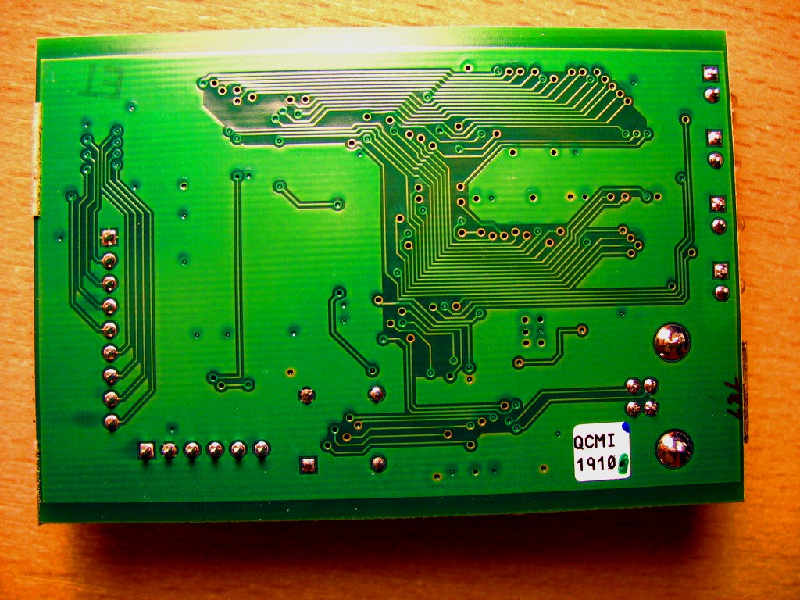
ChronoVu LA8¶
| Status | supported |
| Source code | chronovu-la |
| Channels | 8 |
| Samplerate | 100MHz |
| Samplerate (state) | — |
| Triggers | high, low, dont-care |
| Min/max voltage | -0.5 — 5V |
| Threshold voltage | Fixed: VIH=2V—5V, VIL=0V—0.8V |
| Memory | 8Mbyte (SDRAM) |
| Compression | none |
| Website | chronovu.com |
The ChronoVu LA8 is a USB-based 8-channel logic analyzer with up to 100MHz sampling rate. See ChronoVu LA16 for the 16 channel version.
It features a Xilinx CPLD for sampling, 8MByte of built-in SDRAM to store the samples, and can trigger on low or high states of any combination of probes. After the 8MByte sample buffer is full, the data is transferred to the host via an FTDI FT245RL chip.
See ChronoVu LA8/Info for more details (such as lsusb -v output) about the device.
Many thanks to the vendor (ChronoVu) for freely providing information on the protocol used to communicate with the device. This helped us implement the libsigrok hardware driver more quickly. We're happy to see more open-source friendly vendors support sigrok!
Hardware¶
- Xilinx XC2C256 CoolRunner-II CPLD
- Micron MT48LC4M16A2 SDRAM (8 MByte)
- FTDI FT245RL
- Level shifter: Texas Instruments SN74LVTH244A, marking: LXH244A, datasheet
- PT70151
Photos¶
{kind=link}
 Chronovu La8 Ftdi Ft245rl
Chronovu La8 Ftdi Ft245rl
 Chronovu La8 Front
Chronovu La8 Front
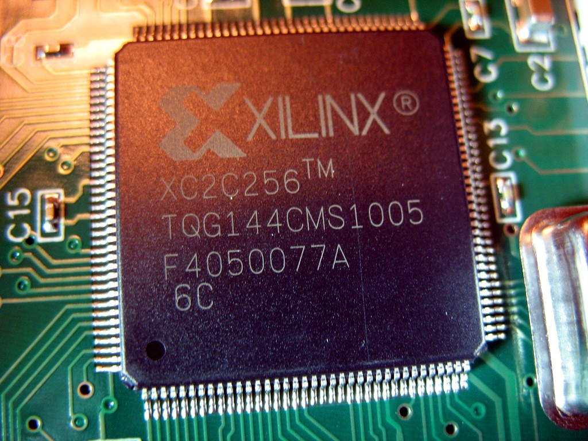 Chronovu La8 Xilinx
{kind=link}
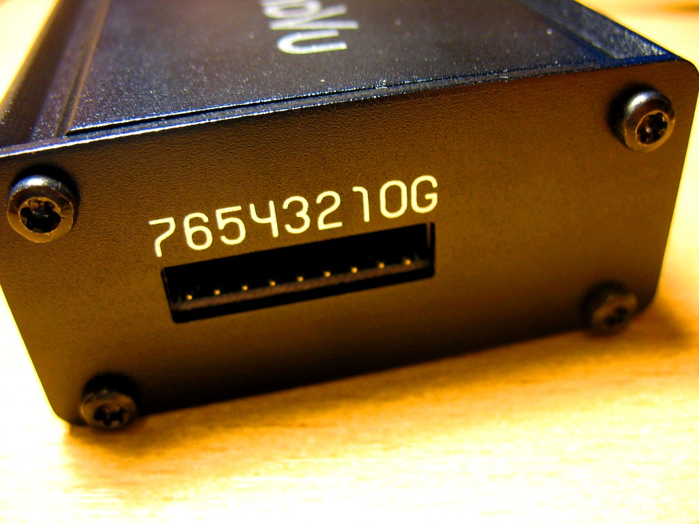 Chronovu La8 Probes
{kind=link}
{kind=link}
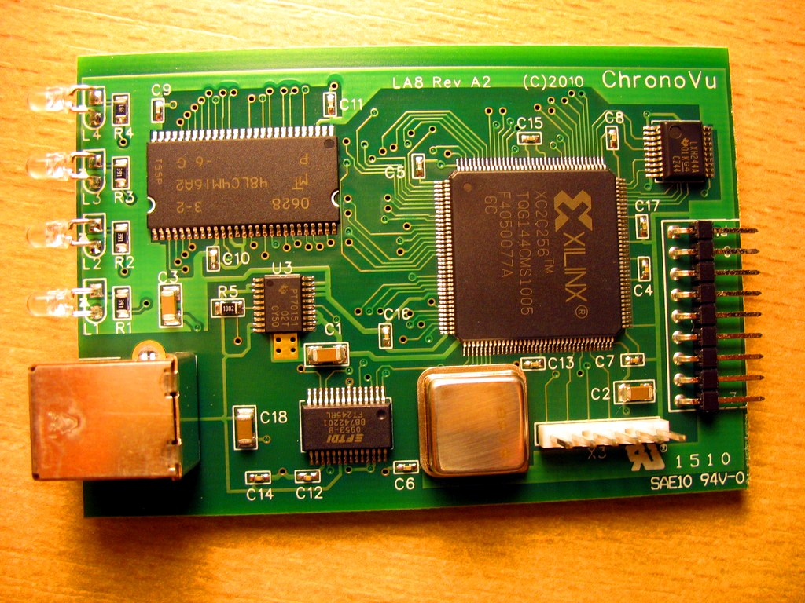 Chronovu La8 Pcb Front
{kind=link}
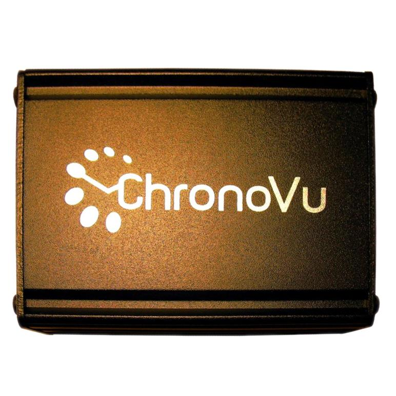 Chronovu La8 Front
{kind=link}
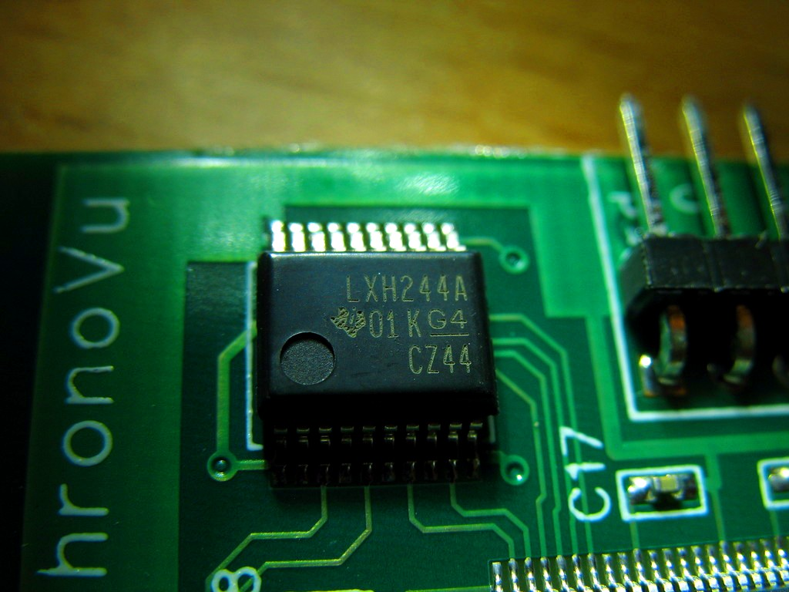 Chronovu La8 Lxh244a
{kind=link}
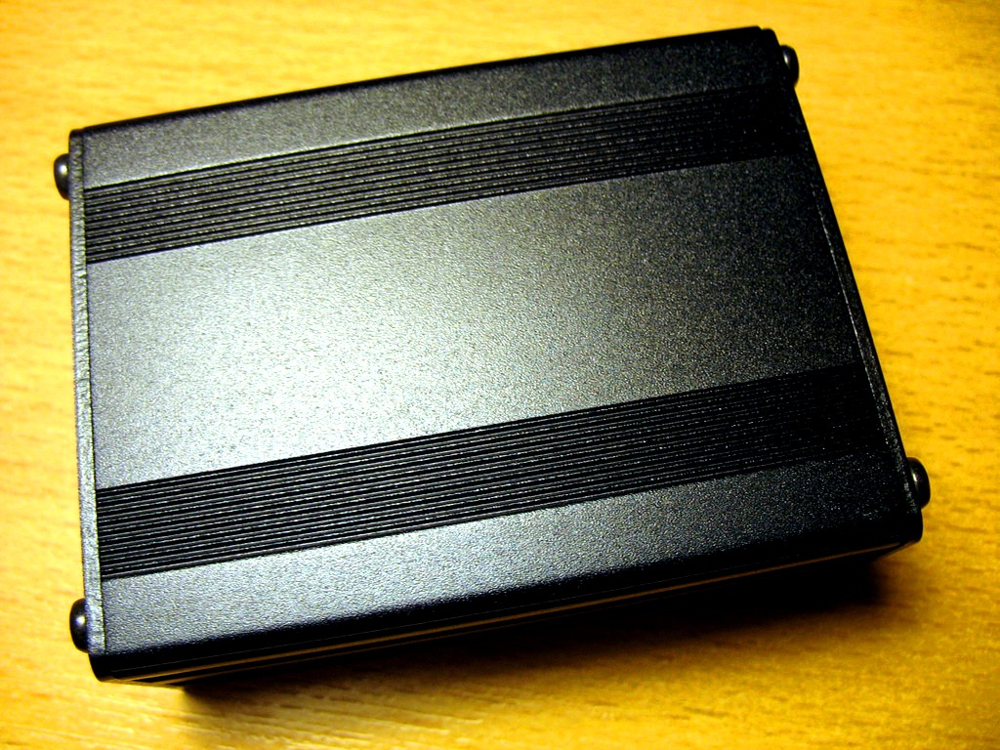 Chronovu La8 Back
{kind=link}
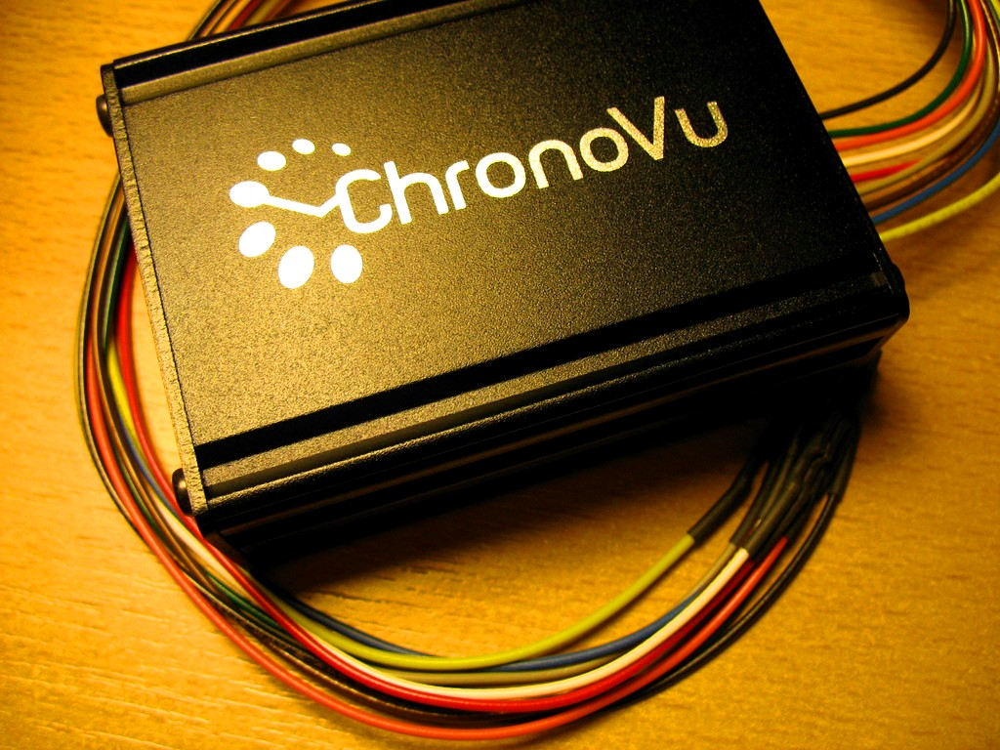 Chronovu La8 Device
{kind=link}
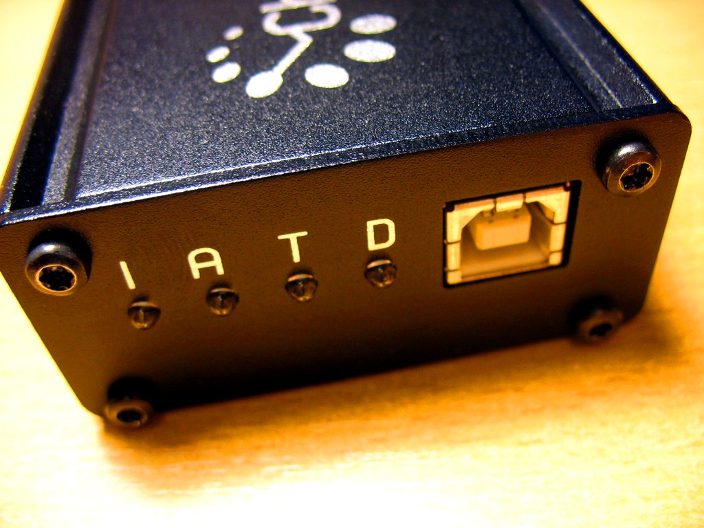 Chronovu La8 Usb
{kind=link}
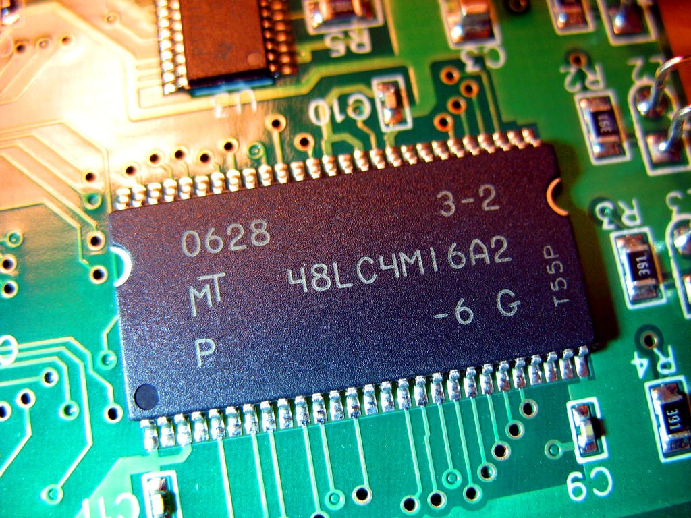 Chronovu La8 Sdram Mt48lc4m16a2
{kind=link}
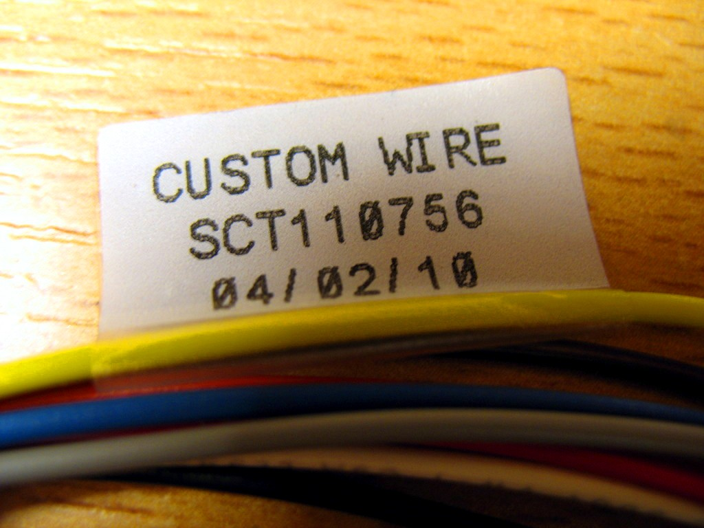 Chronovu La8 Wires
{kind=link}
Usage¶
The default samplerate is 100MHz (which results in a sampling time of 0.084s). In order to get 8MB of samples (max.) at 100MHz in binary format use:
$ **sigrok-cli --driver chronovu-la8 --output-format binary --output-file samples.dat \**
**--samples 8m**
To select another sampling rate use this syntax:
$ **sigrok-cli --driver chronovu-la8 --config samplerate=1mhz \**
**--output-format binary --output-file samples.dat --samples 8m**
In order to save the data in the file format which the ChronoVu LA8 software can read (usually using the .kdt file extension):
$ **sigrok-cli --driver chronovu-la8 --config samplerate=1mhz \**
**--output-format chronovu-la8 --output-file samples.kdt --samples 8m**
Protocol¶
The ChronoVu LA8 is a USB-based device and presents itself as an FTDI device with vendor ID / device ID of 0403:6001 (see also the full lsusb). Newer versions of the device use the VID/PID 0403:8867. Talking to the device is thus done using libftdi's ftdi_read() and ftdi_write() functions.
Starting an acquisition¶
The data acquisition is started by sending 4 specific bytes to the device via ftdi_write(). This configures the sampling and trigger setup and initiates the acquisition.
| Byte | Value | Comment |
|---|---|---|
| 0 | divcount | This byte must contain the divcount value which determines the samplerate/sampletime/sampleperiod (see below). |
| 1 | 0xff | This byte must always be 0xff. |
| 2 | Trigger pattern | This byte contains the trigger pattern (MSB = channel 7, LSB = channel 0). A 1 bit matches a high signal, 0 matches a low signal on a probe. Only low/high triggers (but not e.g. rising/falling) are supported. |
| 3 | Trigger mask | This byte contains the trigger mask (MSB = channel 7, LSB = channel 0). A 1 bit means "must match trigger pattern", 0 means "don't care". |
After these bytes have been sent you need to wait a certain minimal amount of time, then grab the 8MByte buffer data from the LA8 using ftdi_read().
Demangling data¶
However, the data received from the device is not directly usable as it is "mangled" a bit due to internal hardware reasons. So it's required to de-mangle the data first, in order to get it into the final format, i.e., one byte per sample, MSB is the value of channel 7, LSB is the value of channel 0.
Stopping an acquisition¶
TODO
Triggers¶
TODO
Sampling¶
The device has an 8MByte buffer (SDRAM) which is always filled completely with samples. Using the divcount divider value (valid range: 0x00 - 0xfe) samplerates between 100MHz and 392.15kHz can be selected. Depending on the samplerate different total sampling times (from 0.084s up to 21.391s) can be achieved.
The formula for the sample period (not to be confused with the samplerate) is:
sample period = (divcount + 1) * 10ns
The following table shows a small part of the valid divcount values and resulting sample periods, samplerates, and sampling times.
| Divider | Sample period | Samplerate | Sampling time |
|---|---|---|---|
| 0x00 | 10ns | 100MHz | 0.084s |
| 0x01 | 20ns | 50MHz | 0.168s |
| ... | ... | ... | ... |
| 0xfd | 2540ns | 393.7kHz | 21.307s |
| 0xfe | 2550ns | 392.156kHz | 21.391s |
TODO¶
- Test trigger support, might work already.
- Finish input and output file format support for the ChronoVu LA8 software for interoperability. Trigger support and some smaller fixes are pending.
- For sampling of less than 8MByte of data, padding is needed.
- For less than 8 probes, padding is needed too.
- Implement --time support, currently only --samples works correctly.
- Check if the 8MByte 'final_buf' buffer can be replaced by a static 4kB buffer (if data is sent in 4kB chunks).